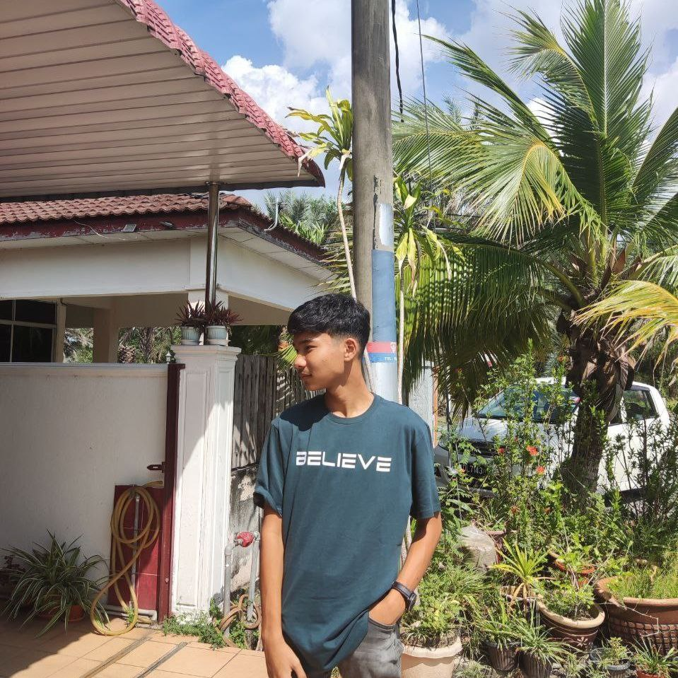

Amirul Shaubari

Summary
I am not a very diligent person, but when I am interested in something, I will try my best.
Education
- Computer Science - SMK Tumgku ABD. Aziz
Work Experience
- Restaurant.
June 2022 - May2022
- Pick up the plate
- Answer people's questions
- Arrange plates, spoons, saucers and cups
Skills
- Customer service:⭐️⭐️⭐️⭐️⭐️
- Communication:⭐️⭐️⭐️⭐️
- Multitasking:⭐️⭐️⭐️⭐️⭐️
Awards and Certifications
- Digital Competency Score - Digital Advance. (March 2022)
- Kedah state open 7-a-side football academy tournament - UiTM soccer academy Kedah branch. (December 2021)
- Committee members/Group leaders - KRS. (January 2020)
Other